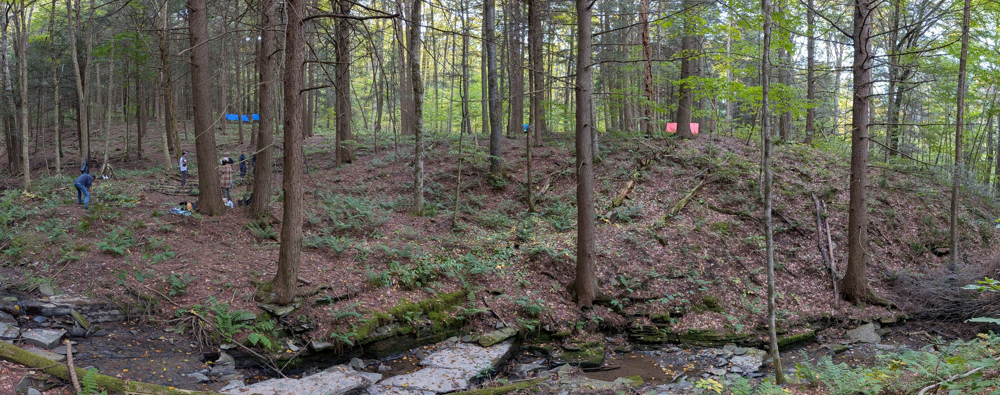
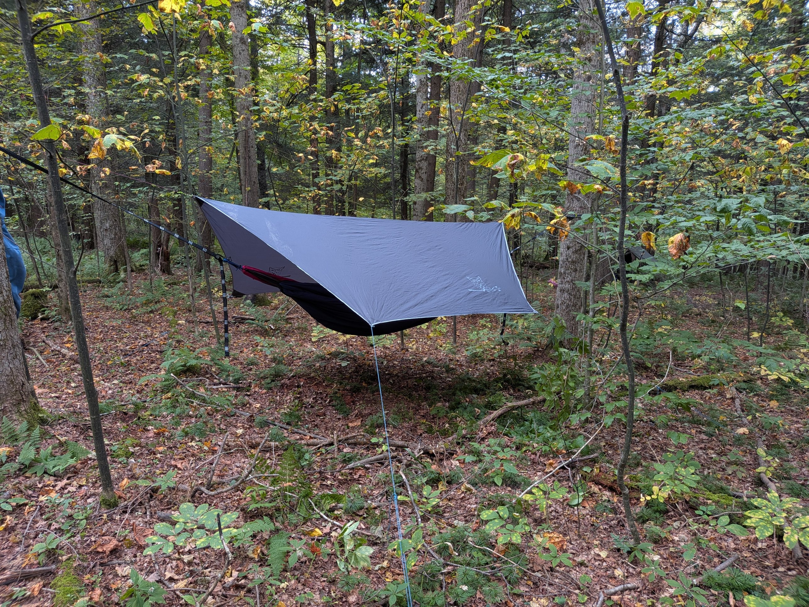
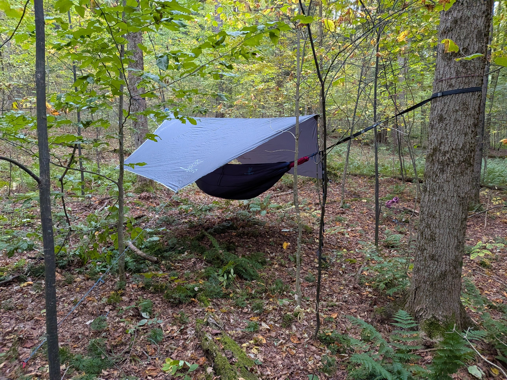
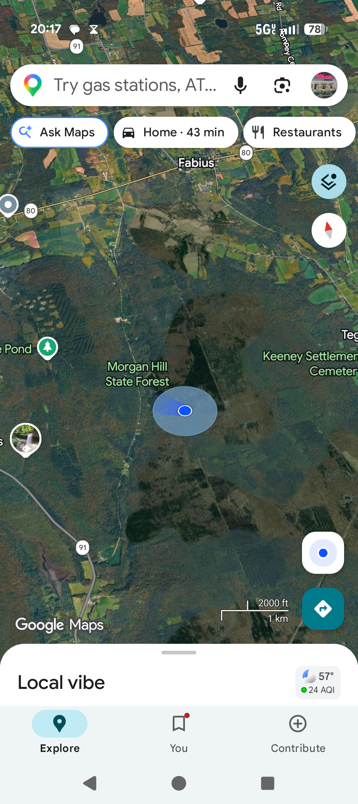

1200–1200 · Actual: Sat cool & dry, rain moved in Sunday on the hike out — forecast held
Items carried
31
Weight carried
14.9 / 35 lb
20.1 lb under target
Volume carried
25.7 / 32 L
6.3 L of pack space left
| Item | Weight | Packed Volume | Essential |
|---|---|---|---|
| Kootek 210T hammock (body only, no straps/bag) | 640 g (22.6 oz) | ~1.8 Lest. | Shelter |
| Wise Owl underquilt | 830 g (29.3 oz) | ~8 Lest. | Shelter |
| Wise Owl rain fly (Wisefly tarp) | 740 g (26 oz) | 2.9 L | Shelter |
| Wise Owl bug net | 450 g (16 oz) | 5.9 L | Shelter |
| Webbing straps | 420 g (14.8 oz) | ~0.4 Lest. | Shelter |
| Wise Owl tent stakes (4, aluminum) | 52 g (1.8 oz) | ~0.1 L | Shelter |
| ~100 ft of 550 paracord | ~300 g (0.66 lb) | ~0.4–0.5 L | ShelterRepair & Tools |
| Item | Weight | Volume | Essential |
|---|---|---|---|
| EMS Creek Freak 32L backpackcontainer | 890 g (1.96 lb) | 32 L | — |
| Backpack rain covercarried, not deployed | 80 g (2.8 oz) | ~0.15 Lest. | — |
| Black Diamond Cosmo 350 headlamp | 79 g (2.8 oz) | ~0.1 L | Illumination |
| Sea to Summit Frontier bowl (medium) | 62 g (2.2 oz) | 0.68 L cap. | — |
| Nalgene 32 oz wide-mouth bottle | 177 g (6.25 oz) | 0.95 L cap. | Hydration |
| HydroJug, 64 oz | ~500 g (1.1 lb)est. | ~2.2 Lest.; 1.89 L cap. | Hydration |
| Arrowhead Equipment Cub Pillow | ~85 g (3 oz) | ~0.3–0.5 Lest. | — |
| Sea to Summit Frontier long spork | 11 g (0.4 oz) | ~0.08 L | — |
| Wise Owl 10L dry bag | ~85 g (3 oz)est. | 10 L cap. | — |
| Sunwill travel mug | 280 g (9.9 oz) | 0.59 L cap. | — |
The Sawyer Squeeze didn't arrive in time for this trip, so it isn't listed here — the Nalgene and HydroJug covered hydration.
| Item | Weight | Volume | Essential |
|---|---|---|---|
| Purple BIC lighter | ~20 g (0.7 oz) | ~0.03 L | Fire |
| Telescopic pocket bellows | ~50 g (1.8 oz)est. | ~0.05 L | Fire |
| Pill bottle, Vaseline-soaked cotton balls | ~30–35 g (1.1–1.2 oz)est. | ~0.04 L | Fire |
| Überleben Hexa ferro rod, 1/2" | 119 g (4.2 oz) | ~0.02 L | Fire |
Two fires were made — one lit in a single strike with a match provided by the instructor (not part of the carried kit), one with the ferro rod above.
| Item | Weight | Volume | Essential |
|---|---|---|---|
| Morakniv Companion, stainless, w/ sheath | ~160 g (5.6 oz)est. | ~0.13 Lest. | Repair & Tools |
| Madison Supply trauma shears (7.5") | 150 g (5.3 oz) | ~0.15 L | Repair & ToolsFirst Aid |
| Curved hemostat, 6" | 57 g (2 oz) | ~0.01 L | Repair & ToolsFirst Aid |
The hemostat's real use this trip was pulling a sausage out of the fire, not first aid.
| Item | Weight | Volume | Essential |
|---|---|---|---|
| Whistle | ~10 g (0.35 oz)est. | negligible | — |
| Hand warmers, 2 bags (2-pack each) | ~110 g (3.9 oz)est. | ~0.1 Lest. | — |
| Best Glide Compact Survival Fishing Kit | ~20 g (0.7 oz)est. | ~0.05 L | — |
| OFF! Deep Woods 6 oz aerosol | 254 g (0.56 lb) | ~0.5 L | — |
| Wet naps, 6 individual packets | ~25 g (0.9 oz)est. | ~0.02 L | — |
| Toilet paper | ~50 g (1.8 oz)est. | ~0.15 Lest. | — |
| Excedrin | ~15 g (0.5 oz)est. | ~0.02 Lest. | — |
Toilet paper and Excedrin were grabbed last-minute and weren't on the original packing list; weights/volumes here are generic estimates, not specific products.
| Total | Target | Difference | |
|---|---|---|---|
| Total weight (all items, incl. backpack) | ~14.9 lb (6,753 g) | 35 lb | 20.1 lb under plenty of headroom |
| Total volume (all items, excl. backpack) | ~25.7 L | 32 L (backpack capacity) | ~6.3 L under ~80% full |
| Item | Reason |
|---|---|
| Food | Group trip — not responsible for this |
| First aid (group kit) | Group trip — not responsible for this |

Campsite overview — tarps strung along the hillside above the stream

Rain fly and hammock pitched and ready

Same setup, wider angle

Morgan Hill State Forest — trip location